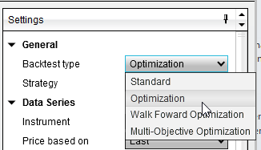
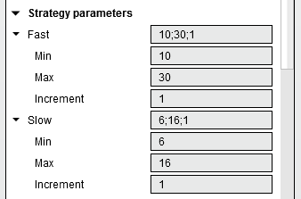
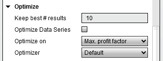
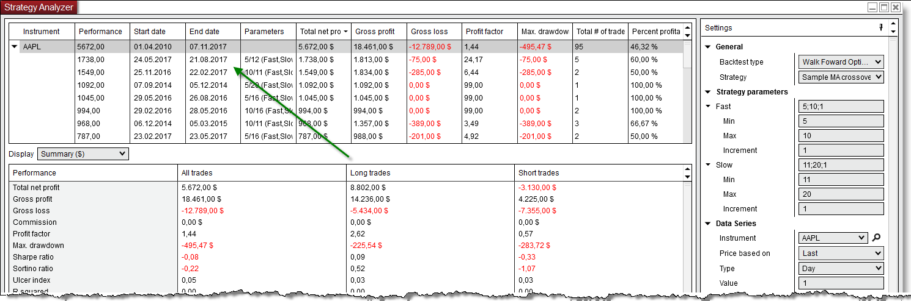
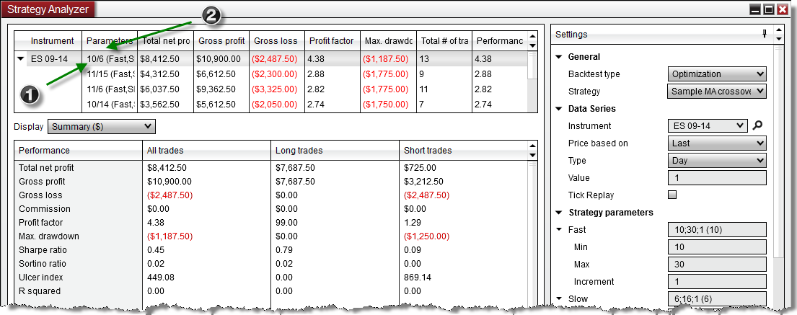
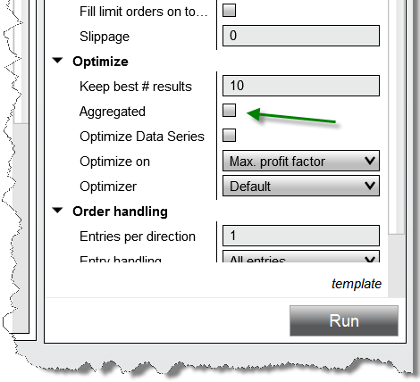

|
<< Click to Display Table of Contents >> Optimization |


|
Optimization
|
<< Click to Display Table of Contents >> Optimization |
|
You can fine tune the input parameters of a strategy through optimization. Optimization is the process of testing a range of values through iterative backtests to determine the optimal input values over the historical test period based on your optimization fitness. To run an optimization you will need:
•Access to historical data
•Custom NinjaScript *strategy
•A thorough understanding of the Strategy Analyzer's backtesting capabilities
Tip: There are several pre-defined sample strategies that are installed with NinjaTrader that you can explore. |
Running an OptimizationTo run an Optimization select the Backtest type of "Optimization" in the settings panel of the Strategy Analyzer.

Setting the Test RangeYou can the test range of strategy parameters to be tested by left clicking on the triangle to expand the strategies sub parameters.
Note: If you don't see the triangle make sure that the Backtest type is set to "Optimization".

Min. - The starting value you want to test
In the image above, the input "Fast" has a starting (initial) value of 10 and an ending value of 30 with an increment of 1. This means that the first value tested will be 10, then 11, then 12 all the way through 30. The input "Slow" has a starting value of 6, ending value of 16 with an increment of 1. Based on these settings, a total of 200 (20 unique values for "Fast" multiplied by 10 unique values for "Slow") backtest iterations will be processed in order to find the optimal combination of input values based on the best optimization fitness.
Setting the Optimization FitnessOptimization is based on the best optimization fitness you select. If you set the property "Optimize on..." to "Max. net profit", the optimizer will seek the optimal input values that return the maximum profit possible. There are over 10 different optimization criterion you can select and can be customized via NinjaScript. Please see the "Understanding Optimization properties" section below for more information. |
 Understanding optimization properties
Understanding optimization properties
Optimization PropertiesApart from the optimization specific properties described below, the properties are identical to the ones found in the backtest properties window. Please see the "Understanding backtest properties" section of the Backtest a Strategy page of the Help Guide for more information.
The following Optimization specific properties are available:

|
 Understanding optimization results
Understanding optimization results
Understanding Optimization ResultsOnce the optimization process is complete, you will see a the Optimization Results Grid appear in the Analyzer tab. The results will be grouped per instrument and shows the parameter combination that achieved the highest performance. The "Performance" column is dynamic and will always be the Optimization Fitness that you selected for the "Optimize" parameter when you ran the optimization.

The Top Optimization ResultsThe Optimizer tab will display the top number of results based on the value you set for the "Keep best # results" property in the Optimizer dialog window. The column Parameters displays the optimized input values.

1.The optimal value for the "Fast" input for the demonstration strategy used for this optimization 2.The optimal value for the "Slow" input for the demonstration strategy used for this optimization |
Basket testRunning an optimization across a list of instruments works very much the same as running a regular basket backtest. For general information, please refer to the Basket testing multiple instruments page. However, when running an optimization across multiple instruments, an optional "Aggregated" option will be available.

|
 Understanding factors that affect optimization performance
Understanding factors that affect optimization performance
32 bit vs 64 bitWhen you run an optimization in the 32 bit version of NinjaTrader to consume less memory we do not store any trade data for each backtest that is run. Therefore if you want to do trade analysis on one of the backtest results returned from an optimization NinjaTrader must re-run the backtest to get the trade data, this adds a small delay when switching between tests. The 64 bit version of NinjaTrader will take advantage of the extra RAM available to NinjaTrader and will keep the trade results for each kept backtest, allowing you to quickly change between backtest result reports.
Keep best # results If you are finding that you are running low on system memory during your backtests reduce this number of results to keep will make a significant improvement to the memory used by NinjaTrader.
Running multiple tests at a timeYou will not get more done in a smaller time frame by separating multiple tests out manually and running them at the same time on the same PC. NinjaTrader will efficiently use all CPU cores for any optimization for fastest possible testing.
CPU ResourcesPlease insure that you have as much system resources available to the optimization as possible, this usually means making sure all other applications are closed. Furthermore as as the NinjaTrader optimization engine is optimized to take advantage of as much system resources as possible it is advisible not to trigger an optimization during a time where you would need to be using the PC. For example it is not advised to start an optimization while you are managing the exit of a trade.
Historical Trade DataThe IncludeTradeHistoryInBacktest property is set to false by default when a strategy is applied in the Strategy Analyzer for optimization. This provides for leaner memory usage, but at the expense of not being able to access Trade objects for historical trades. Thus, fields such as SystemPerformance.AllTrades.Count that rely on references to Trade objects will not have any such references to work with. If you would like to save these objects for reference in your code, you can set IncludeTradeHistoryInBacktest to true in the Configure state, but this can result in greater memory usage. For more information, see the Working with Historical Trade Data page.
Running Efficient OptimizationsStrategy optimizations are expected to consume a good deal of CPU resources, simply due to the nature of the iterative data processing they perform. Strategies with a relatively large number of parameters for optimization can multiply this impact. When working with strategies with a large number of parameters, avoid using "1" as the increment value for the optimizer, to avoid forcing the optimizer algorithm to run the maximum number of permutations. Changing the increment value to as little as "2" can cut the number of permutations in half, and increasing this value can have progressively less of an impact.
The Genetic Algorithm can offer an alternative solution to increasing parameter increment values. Rather than running brute-force tests by iterating over all permutations, the Genetic Algorithm intentionally ignores parameter combinations which are likely to produce sub-optimal results.
Especially on larger parameter sets with finer increment values, the upper limits of potential permutations / parameter combinations could be reached for both approaches to optimization - the error message "The strategy needs at least one parameter to optimize" would be then an indication to rework the # of parameters or increase the increment values to reach a more meaningful permutation count.
Using a virtual / cloud serverIf you are using a virtual or cloud server as basis for your setup when running optimization testing in the Strategy Analyzer, please keep in mind that such environments can typically allocate available resources on demand. NinjaTrader will still take advantage of all available threads for it's processing, however those resources available would be determined at the start-up of the NinjaTrader platform. So if your virtual resources would have changed while you were in a working session, then please restart fresh to ensure performance will be optimal. |